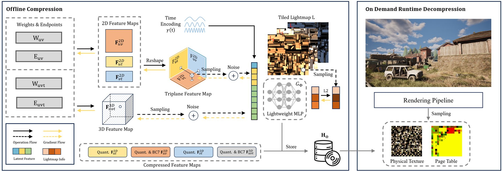

Neural Dynamic GI: Random-Access Compression for Temporal Multiple Lightmaps Using Compact Neural Representations
Abstract
High-quality global illumination (GI) in real-time rendering is commonly achieved using precomputed lighting techniques, with lightmap as the standard choice. To support GI for static objects in dynamic lighting environments, multiple lightmaps at different lighting conditions need to be precomputed, which incurs substantial storage and memory overhead.
To overcome this limitation, we propose Neural Dynamic GI (NDGI), a novel compression technique specifically designed for temporal lightmap sets. Our method utilizes multi-dimensional feature maps and lightweight neural networks to integrate the temporal information instead of storing multiple sets explicitly, which significantly reduces the storage size of lightmaps. Additionally, we introduce a block compression (BC) simulation strategy during the training process, which enables BC compression on the final generated feature maps and further improves the compression ratio. To enable efficient real-time decompression, we also integrate a virtual texturing (VT) system with our neural representation.
Compared with prior methods, our approach achieves high-quality dynamic GI while maintaining remarkably low storage and memory requirements, with only modest real-time decompression overhead. To facilitate further research in this direction, we will release our temporal lightmap dataset precomputed in multiple scenes featuring diverse temporal variations.
Results
